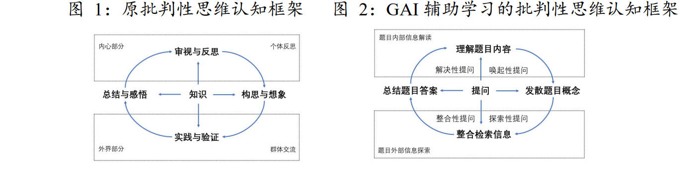
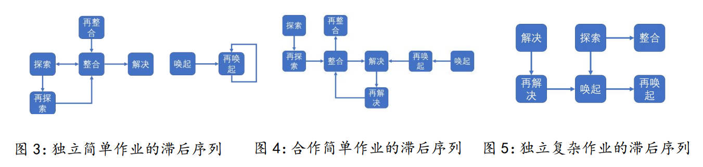
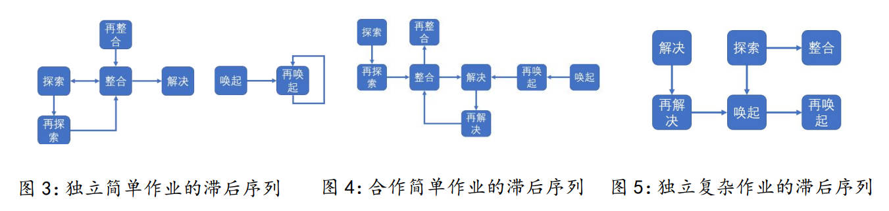

Abstract
This study focuses on the cognitive processes involved when Generative Artificial Intelligence (GAI)-assistedlearning is applied to different types of learning tasks. It employs content analysis and lag sequential analysistodelineate the trajectories of students' critical thinking. Through comparative statistics, the research investigateschanges in critical thinking abilities after multiple rounds of GAI-assisted learning. The findings reveal distinct characteristics in the learning trajectories across the three types of tasks. GAI-assisted learning was found to haveonlya partial impact on students' critical thinking abilities.
Research Focus
The study examines the cognitive patterns of questioning when students engage with GAI during various learning tasks—individual simple, collaborative simple, and individual complex assignments. It seeks to uncover how the act of questioning reflects and stimulates critical thinking, and how the type of learning task mediates these processes.
Methodogy
Twenty-four first-year university students majoring in Educational Technology participated
in three classroom sessions integrating GAI tools such as ChatGPT. Each session represented
a different task type:
Individual Simple Task: Independent concept learning.
Collaborative Simple Task: Group conceptual synthesis.
Individual Complex Task: Designing multimedia learning scripts.
Data were gathered from AI-chat logs and pre-/post-critical thinking tests (CCTDI).
The researchers coded students’ questions into categories—Evocative, Exploratory, Integrative,
and Solution-oriented—to visualize cognitive sequences.
Key Finding
Distinct Cognitive Patterns Across Tasks:
Individual simple tasks centered on integrative questions,
reflecting information organization and synthesis.
Collaborative tasks shifted toward solution-focused sequences,
showing the role of negotiation and collective reasoning.
Complex tasks regressed to evocative questions, emphasizing problem
identification rather than solution generation.
Core Thinking Trajectory:
Across all tasks, the primary pattern followed Exploration → Integration → Solution,
representing the cognitive logic of AI-supported inquiry.
Limited Improvement in Critical Thinking Scores:
Quantitative analysis revealed significant gains only in the “systematicity”
dimension of the critical thinking scale, indicating short-term AI-assisted
learning enhanced students’ structured thinking but not overall critical
 

Discussion & Conclusion
The results suggest that GAI’s educational potential lies not in replacing
reasoning but in stimulating reflective questioning. Learners’ ability to '
frame meaningful questions determines the depth of their engagement with AI.
However, overreliance on AI may simplify cognitive effort in complex tasks.
Effective learning design must therefore balance human inquiry and AI assistance.
The study emphasizes that the power of learning lies in asking questions.
GAI can amplify this power when used intentionally—supporting students in exploring,
integrating, and solving problems while nurturing the mindset of critical inquiry
required in the age of intelligent education.